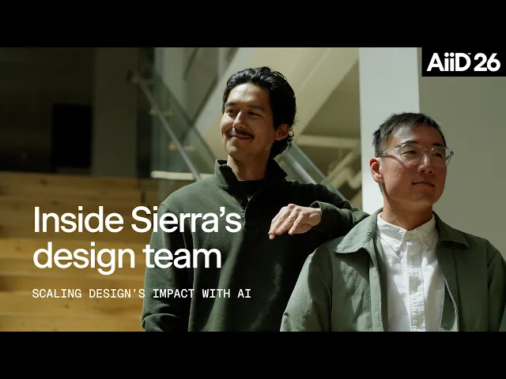
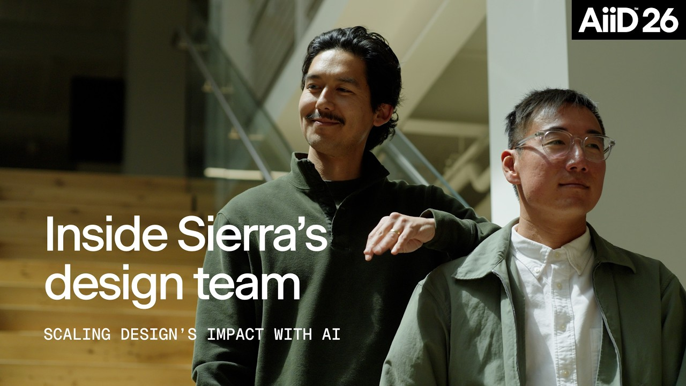

中文全文译文：由「译文工坊」根据英文原文自动翻译生成，供学习参考。结构与措辞以译文为准；想看原始论述，请点上方「阅读原文」。

Designer Fund
在发布 2026 年设计中的 AI 报告之后，我们一直在走近那些塑造科技产品的设计团队，包括 Linear、Stripe 和 Notion，了解 AI 如何改变他们的设计与构建方式。我们很高兴开始与大家分享这些案例研究。
第一站：Sierra，一家为企业客户体验打造 AI 智能体的创业公司。
Sierra 由 Bret Taylor 和 Clay Bavor 联合创立，已悄然成为史上增长最快的企业级公司之一，仅用两年多时间 ARR 就突破了 2 亿美元。但在这种爆发式增长的背后，是一项极端的创作约束：Sierra 的设计团队只有寥寥数人，却要支持一个规模近乎自己 20 倍的工程团队。
当 AI 成为代码生产力的巨大倍增器，要跟上节奏就需要一种全然不同的思维方式。Sierra 的设计师再也无法亲自过问每一个产品决策，只能彻底重新思考自己的杠杆所在。正如设计师 Wayne Fan 和 Nick Hiotis 所说，重心已经从亲手打磨每个功能，转向构建系统、模式和组件，让数百名工程师能够独立发布高质量的 UI。
与此同时，团队也非常珍视自己的手艺。尽管 AI 让搭建这些技术基础的速度大幅提升，他们仍有意让流程中的某些环节保持缓慢、由人来做，不去自动化。


缩短从想法到现实的距离
验证想法的速度越快，浪费在假设性争论上的时间就越少。这对 Sierra 意义重大，因为他们的产品数据密度极高。一个布局在 Figma 里可能完美无瑕，一碰到真实数据就彻底崩坏。Wayne 笑着回忆，他曾完成一份“看起来超酷”的 Figma 文件，结果放进可运行的原型里一看，只好向工程师道歉。
于是，他们调整了工作流。他们不再把 Figma 当作唯一的事实来源，而是用它快速勾勒粗略的概念，然后立刻转到 Cursor，用真实数据构建原型。几个小时内，他们就能知道一个想法到底行不行得通。
Wayne 把这种新节奏称为：“做出来、做原型、发现错了、回头重来”……而这一切都在午饭前完成。
靠构建系统，而不是堆砌界面，来扩展设计
当 AI 第一次让设计师可以轻松编写生产代码时，团队的本能反应是自己动手修。他们有一个 Slack 频道，工程师会在里面发布设计细节问题，Wayne 就会带着 Claude 跳进去收拾。他指出某个奇怪的间距问题，输入 “我不喜欢这个，修一下”，问题就解决了。
但他很快意识到，这样无法扩展。“与其帮 50 位工程师提升手艺、品味和一致性，如果所有打磨都由我自己来做，那我其实只是第 51 位工程师。”Wayne 说。他是在治标，而不是治本。“这完全不是对我时间的好利用，尽管做起来让人上瘾，也特别有成就感。”
还有一个副作用：通常用来磨砺设计师判断力的良性摩擦正在消失。人们不再争论某个组件或布局为什么更好，而是太容易直接接受 AI 的第一个建议然后继续往下走。“在追求品质上不断打磨、锻炼出来的那块肌肉正在流失，”Wayne 说，“它被外包出去了。”
这一认识改变了团队看待自身角色的方式：
“如果借助 Claude 或 Cursor 这类工具，我们能更轻松地触及生产代码和各种系统，那么设计师在大规模赋能上的角色是什么？与其一次只改一个像素，我们更应该搭建工程师用来创建新功能的基础设施。”
- Wayne Fan，Sierra 产品设计师
以他们的数据表格为例。到去年 12 月，产品中积累了大约 18 个版本的同一种模式，每个版本解决的问题都略有不同。团队没有再增加一轮评审，而是把它们整合成一个灵活的表格组件，支持排序、搜索和分页，并在各团队提出需求时按需扩展。
这种构建共享基础的理念，在 Sierra 并不局限于设计领域。工程团队最近撰文谈到，出于同样的原因，他们把各个角色专属的 AI 智能体整合成了一个全公司通用的智能体：当改进能在整个组织内产生复利效应，而不是只惠及某个人或某个团队时，收益最大。
Sierra 的设计师通过纵观整个产品，发现可以用共享基础设施帮助团队更快、更一致地构建的地方，来放大自己的影响力。正如 Nick 所说：“我们必须保持极强的横向视野，了解所有即将推出的服务和功能，以及正在构建的东西。识别模式是一项我们不得不练到炉火纯青的能力。”

有意识地守护手艺
话虽如此，有些东西依然非常值得亲手去做。
Sierra 运行着两个相互配合的智能体：负责优化智能体的智能体 Explorer，以及负责构建智能体的智能体 Ghostwriter。当 CEO Bret Taylor 要求为它们设计一组图标时，Wayne 和 Nick 打造了一套小型视觉系统 - 以罗盘玫瑰作为产品中一切 AI 相关内容的锚点 - 并在尝试过星光闪烁和乐高小人仔风格的脸之后，最终为 Ghostwriter 选定了一只幽灵。
接着，他们开始钻牛角尖。他们整整两个小时盯着 16×16 的网格，争论一只幽灵到底需要几道波纹才显得有生命力。静态素材完美之后，他们在 Cursor 中为它加上动画：它“思考”时，眼睛会微微游移，身体也会变形。
这样做有效率吗？绝对没有。但它找回了人们当初入行做设计的那份乐趣。
“你一抬头，发现几个小时过去了，”Nick 说，“然后你会想：哇，这太有成就感了。我没有把时间用得最高效。但这感觉有多棒？”他把这些称为“愉悦时刻”，正是这些细节，让设计不至于沦为输入提示词、挑选输出的枯燥循环。
这只幽灵成了吉祥物：大家把它的贴纸贴在笔记本电脑上，它也成了团队凝聚的象征。“它本来也可能是一支铅笔，”Nick 说，“但有人会为一支铅笔凝聚在一起吗？拥有一个吉祥物、一种个性，值得我们为之煎熬、为每个像素流汗。”
随着 AI 让构建变得更容易，Sierra 的故事提醒我们：值得执着打磨的细节，往往并不是最省时间的那些。多花一个小时手绘，或者追逐一个古怪的想法，常常正是让一个纯粹实用的产品变成人们真正喜爱的产品的关键。

Sierra 的设计团队横跨产品、品牌和动效，帮助企业借助 AI 打造更好、更有人情味的客户体验。他们正在旧金山、伦敦和新加坡的办公室招聘设计师。
Sierra 设计团队如何跟上规模是自己 20 倍的工程团队
投资 Fearn，并呼吁受监管行业重视设计
下一篇
近期文章